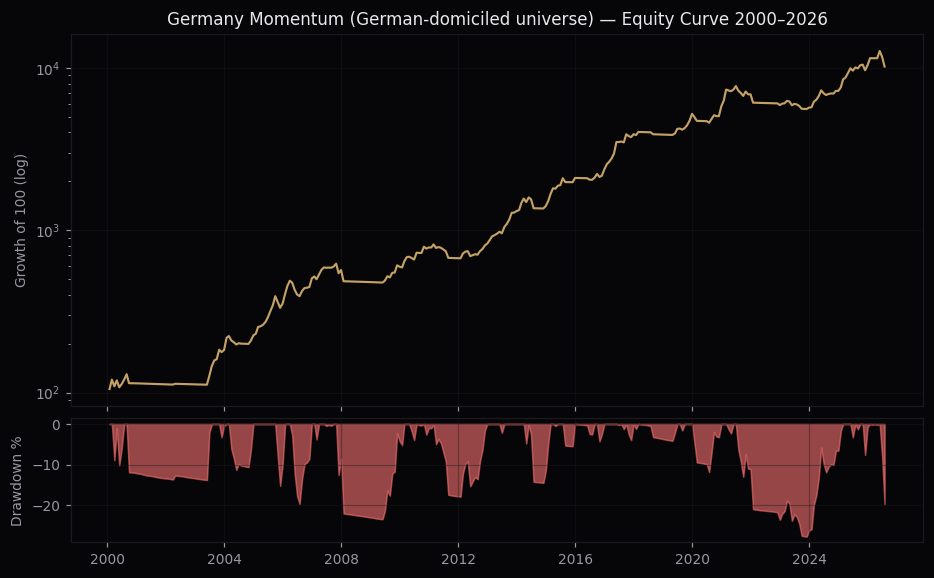
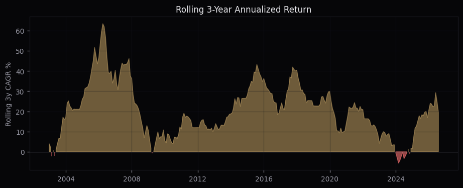

One-at-a-time sweeps across momentum lookback, market cap filter, regime window, portfolio size, fundamental filter and costs, plus calendar-year returns and rolling 3-year performance, behind the Germany XETRA momentum strategy. This analysis covers the LIVE variant: German-domiciled companies only (the wide-universe research config is documented in the strategy report). 2000–2026, 319 months. Reminder from the adversarial audit: pre-2015 data is survivors-only; anchor expectations on the 2015+ window.
LB 12M skip 0 · mcap top 70% (P30) · N=20 equal weight · DAX vs MA200 · 40bps · no fundamental filter — CAGR +19.0%, Sharpe 0.899, Sortino 1.73, MaxDD -27.8%.

| Config | Sharpe | Sortino | CAGR | MaxDD |
|---|---|---|---|---|
| 12M skip 0 | 0.899 | 1.73 | +19.0% | -27.8% |
| 9M skip 1 | 0.824 | 1.56 | +17.33% | -33.5% |
| 9M skip 0 | 0.81 | 1.69 | +18.88% | -29.4% |
| 12M skip 1 | 0.778 | 1.38 | +16.02% | -29.7% |
| 6M skip 1 | 0.75 | 1.46 | +17.5% | -31.2% |
| 3M skip 1 | 0.747 | 1.66 | +18.74% | -34.7% |
| 6M skip 0 | 0.724 | 1.53 | +17.83% | -30.4% |
| 3M skip 0 | 0.594 | 1.36 | +15.78% | -37.1% |
12M/skip-0 is the top of a smooth plateau (9M/skip-1 at 0.82, 9M/skip-0 at 0.81) — not an isolated peak. Short lookbacks degrade materially; adding a skip-month to 12M hurts (0.90→0.78).
| Universe | Sharpe | Sortino | CAGR | MaxDD |
|---|---|---|---|---|
| none (all) | 0.809 | 1.55 | +17.87% | -35.8% |
| top 90% (P10) | 0.8 | 1.56 | +17.59% | -33.6% |
| top 70% (P30) | 0.899 | 1.73 | +19.0% | -27.8% |
| top 50% (P50) | 0.865 | 1.6 | +17.33% | -23.3% |
| top 30% (P70) | 0.657 | 1.1 | +12.93% | -25.9% |
P30 (drop the smallest 30%) is the sweet spot. Tightening to large caps only (P70) costs 6pp of CAGR — the edge lives in mid/small caps; P50 trades 1.7pp of CAGR for a 4.5pp shallower MaxDD.
| Window | Sharpe | CAGR | MaxDD | |
|---|---|---|---|---|
| MA50 | 0.56 | +12.88% | -46.4% | |
| MA75 | 0.677 | +14.87% | -36.8% | |
| MA100 | 0.765 | +16.49% | -40.1% | |
| MA125 | 0.817 | +17.38% | -31.6% | |
| MA150 | 0.863 | +17.99% | -32.2% | |
| MA200 | 0.899 | +19.0% | -27.8% | |
| MA250 | 0.774 | +17.21% | -30.0% | |
| MA200 ±2% hysteresis band | 0.896 | +19.03% | -23.5% |
Sharpe rises nearly monotonically from MA50 to MA200 and falls at MA250 — a plateau edge, not a knife-edge. The ±2% hysteresis band (enter above MA200+2%, exit below −2%, at most one state change per month) keeps CAGR/Sharpe and cuts MaxDD to −23.5%; it changes the regime state in only 9 of 321 months and was validated cross-market (improves Canada and Taiwan too), but is not adopted in the live signal.
| N | Sharpe | Sortino | CAGR | MaxDD |
|---|---|---|---|---|
| 5 | 0.274 | 0.45 | +10.82% | -59.8% |
| 7 | 0.566 | 1.03 | +17.71% | -46.4% |
| 10 | 0.716 | 1.34 | +19.14% | -39.1% |
| 15 | 0.794 | 1.46 | +18.03% | -33.1% |
| 20 | 0.899 | 1.73 | +19.0% | -27.8% |
| 25 | 0.919 | 1.76 | +18.22% | -24.4% |
| 30 | 1.019 | 1.98 | +18.66% | -25.0% |
Concentration only hurts on this universe: N=5 is unusable (0.27, −60% MaxDD) and Sharpe keeps improving past the live N=20 — N=30 reaches 1.02 with a −25% MaxDD. N=20 was chosen as the practicality ceiling (30 positions is operationally heavy at small capital); the direction of the tradeoff is worth knowing.
| Filter | Sharpe | Sortino | CAGR | MaxDD |
|---|---|---|---|---|
| None (live config) | 0.899 | 1.73 | +19.0% | -27.8% |
| NetIncome(TTM)>0 | 0.955 | 1.82 | +16.18% | -20.7% |
| EBIT(TTM)>0 | 0.947 | 1.83 | +16.06% | -19.4% |
| GrossProfit(TTM)>0 | 0.838 | 1.52 | +15.27% | -25.7% |
| ROE(TTM)>0 | 0.886 | 1.66 | +14.4% | -21.2% |
On the German-only universe, NetIncome(TTM)>0 is the risk-adjusted winner: Sharpe 0.955 and MaxDD −20.7% vs the unfiltered 0.899/−27.8%, at a cost of 2.8pp CAGR. EBIT>0 is nearly identical. The live config stays unfiltered (CAGR priority), same decision as the wide-universe report; the profitable-only variant is the natural lower-drawdown alternative for anyone who prefers it.
| Round-trip cost | Sharpe | Sortino | CAGR | MaxDD |
|---|---|---|---|---|
| 0bps RT | 0.986 | 1.93 | +20.55% | -25.1% |
| 40bps RT | 0.899 | 1.73 | +19.0% | -27.8% |
| 100bps RT | 0.771 | 1.45 | +16.71% | -31.6% |
| 200bps RT | 0.561 | 1.01 | +12.98% | -37.5% |
At ~27%/mo one-way turnover, each 10bps of round-trip cost ≈ 0.38pp of CAGR. Real IBKR spreads were measured live for the full eligible universe (median 35bps; held portfolio median 22bps) — the 40bps assumption is realistic at small size.
| Year | Strategy | DAX (TR) | Excess |
|---|---|---|---|
| 2000 | +13.9% | -7.5% | +21.4pp |
| 2001 | -1.5% | -19.8% | +18.3pp |
| 2002 | +0.0% | -43.9% | +43.9pp |
| 2003 | +62.6% | +37.1% | +25.5pp |
| 2004 | +23.1% | +7.3% | +15.8pp |
| 2005 | +56.9% | +27.1% | +29.8pp |
| 2006 | +43.1% | +22.0% | +21.1pp |
| 2007 | +12.5% | +22.3% | -9.8pp |
| 2008 | -15.8% | -40.4% | +24.6pp |
| 2009 | +24.4% | +23.8% | +0.6pp |
| 2010 | +31.4% | +16.1% | +15.3pp |
| 2011 | -14.2% | -14.7% | +0.5pp |
| 2012 | +23.2% | +29.1% | -5.9pp |
| 2013 | +58.4% | +25.5% | +32.9pp |
| 2014 | +7.4% | +2.7% | +4.7pp |
| 2015 | +48.8% | +9.6% | +39.2pp |
| 2016 | +13.1% | +6.9% | +6.2pp |
| 2017 | +64.5% | +12.5% | +52.0pp |
| 2018 | -0.6% | -18.3% | +17.7pp |
| 2019 | +34.2% | +25.5% | +8.7pp |
| 2020 | +11.5% | +3.5% | +8.0pp |
| 2021 | +18.2% | +15.8% | +2.4pp |
| 2022 | -14.0% | -12.3% | -1.7pp |
| 2023 | -3.5% | +20.3% | -23.8pp |
| 2024 | +26.8% | +18.8% | +8.0pp |
| 2025 | +43.9% | +23.0% | +20.9pp |
| 2026 | -1.9% | +4.7% | -6.6pp |
22 of 27 years beat the DAX. Crisis protection is the regime filter working (2002: 0.0% vs −43.9%; 2008: −15.8% vs −40.4%; 2018: −0.6% vs −18.3%). The worst relative year is 2023 (−3.5% vs +20.3%) — the classic post-bear momentum crash, present in every regime variant tested; expect it again at the next bear-to-bull turn.

Mean rolling 3-year CAGR +20.5%, range -5.6% to +63.4%, negative in only 4.6% of all 3-year windows.